Youtube iOS Redesign
Role: UI Designer
Timeline: Aug 2016
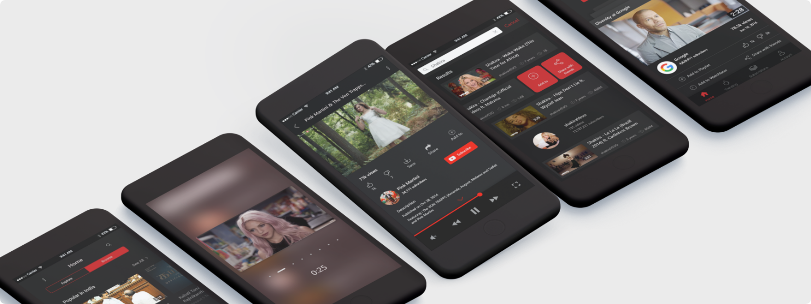
This was a self initiated project, aimed at applying the newly learned principles of usability testing, and UI Design. Steve Krug's book 'Don't make me think' inspired me to take this project up. Also, I had gone through the iOS Human Interface guidelines and wished to apply them to a project.
Design Brief
The Youtube Application for iOS is very similar in terms of the visual design and the UX flow, to the Android application. The essential elements of iOS, like the tab bar are not utilized. Redesign the application to better fit the iOS principles, and if possible, design better flows for common tasks.
Research
We decided to do a basic user research to get into how different people use the youtube app, and how they go about doing basic tasks. We went to 5 people, and tried to cover users of both Android and iOS apps. The questionnaire included questions like how people come across a new video, what does the upload date of a video mean to them, and how relevant do they think the suggested videos are.
We also gave the users, basic tasks like searching for a video, subscribing to a channel's notifications and signing out of the app completely, and then observed them doing the tasks. We made sure that they realised it was the UI's fault and not theirs, if they were unable to complete a task.
Insights
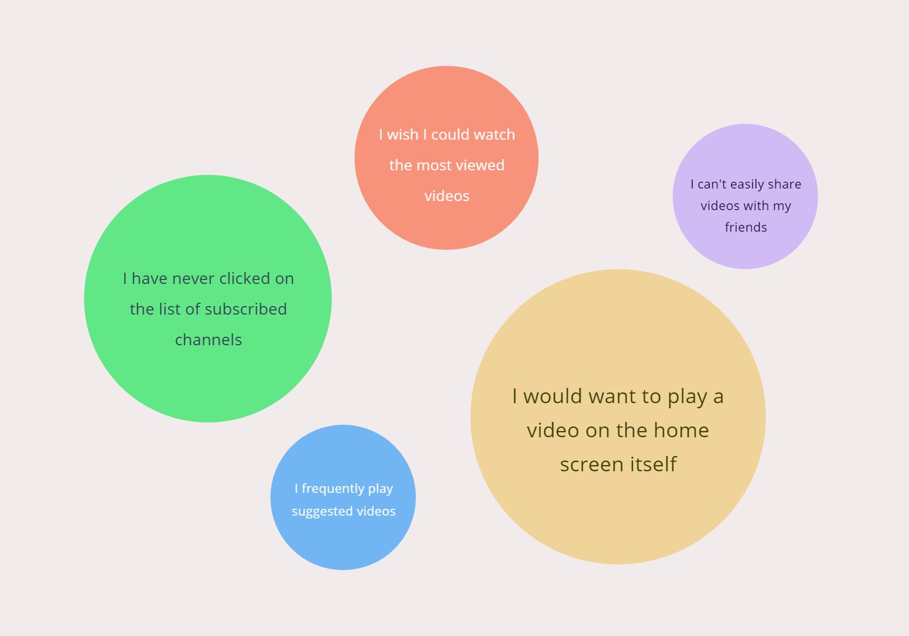
Some answers were really insightful, and made us think twice about why a certain flow is implemented currently. They also opened our minds to the more obscure elements like the value of the upload date and view count. User Research helped us not only to get into the minds of the people, but also to empty us of the preconceived notions about the current designs.
Wireframes
We analyzed the answers in detail, and tried to bring in our own discussions to the design process. We also read a research paper on the hotspots on a mobile device and the ease of thumbs to reach the difficult places on the device.
After that we jumped right on to the wireframing stage, and sketched out ideas on paper to realise what we had been discussing.
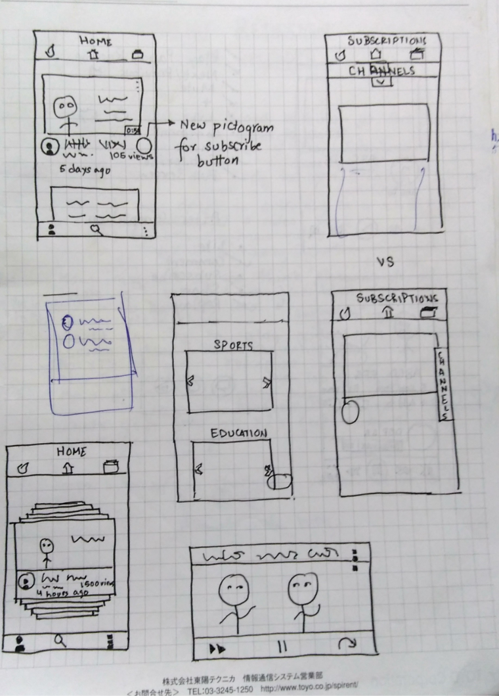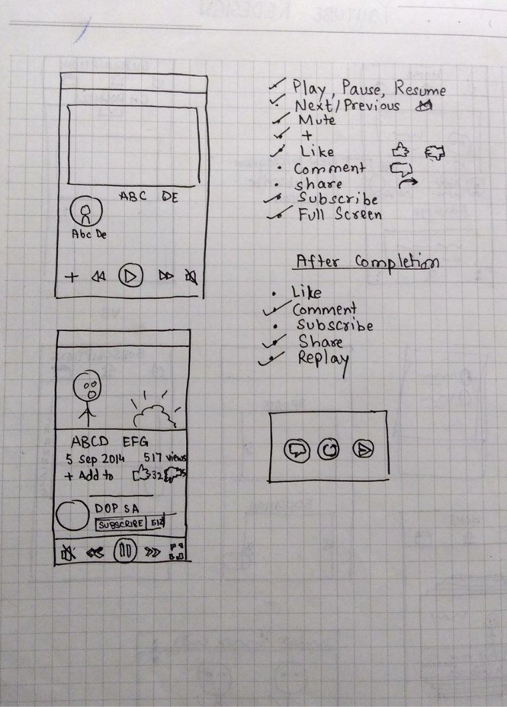
Features
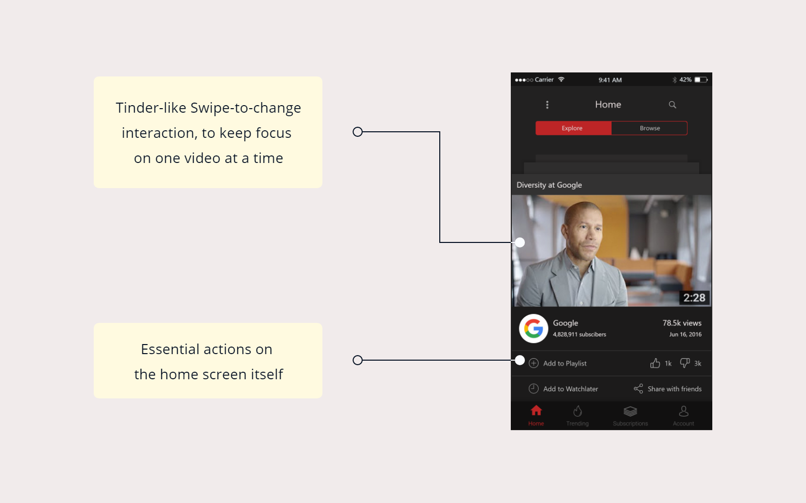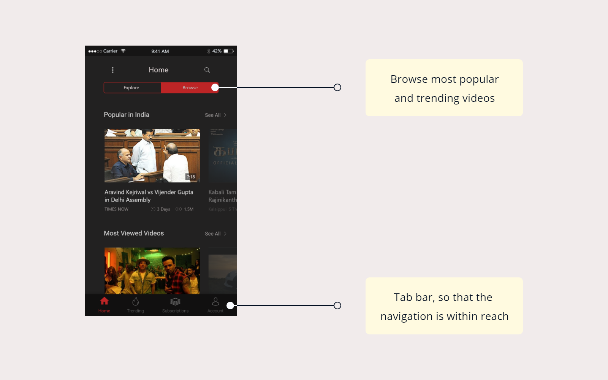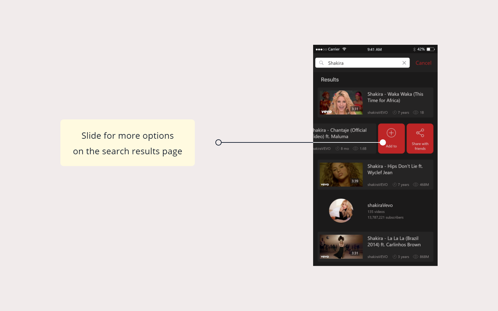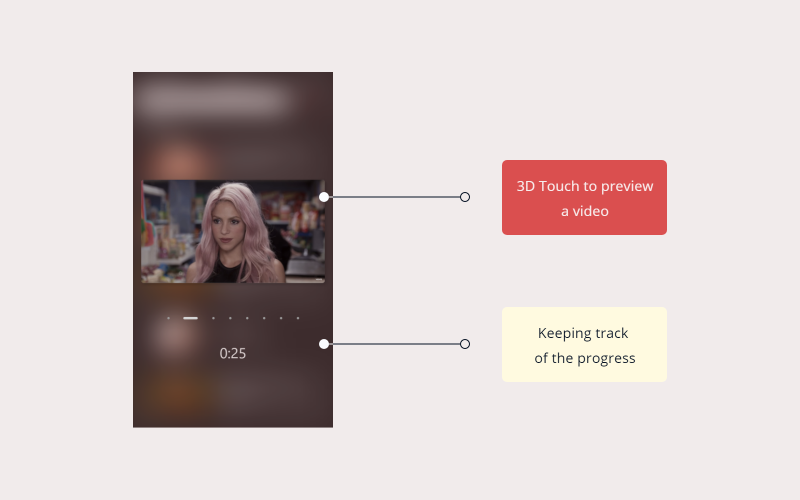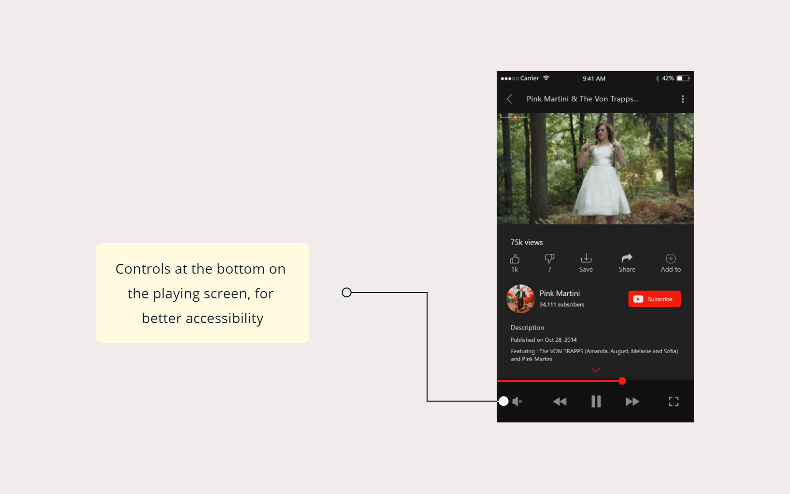
Visual Design
We referred to the
Youtube Brand Resources for the visual design of the app.
Youtube Red (#CD201F) was used as it is, and
Mine Shaft color (#222121) was chosen to give it a feel of night mode and so that it was less stressful to the eyes of the users.
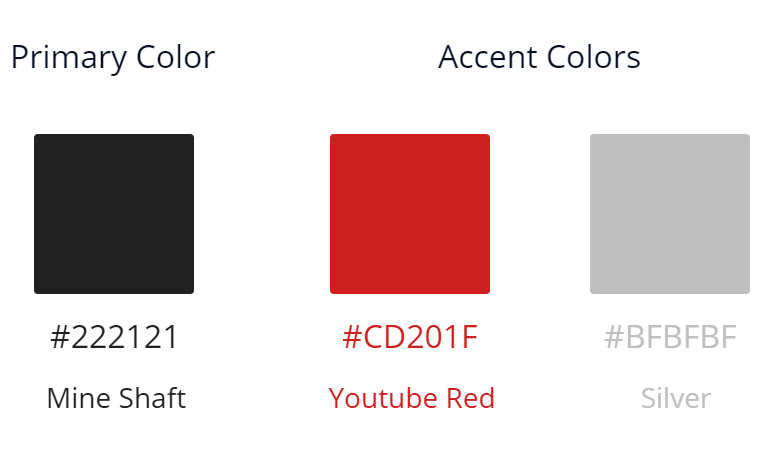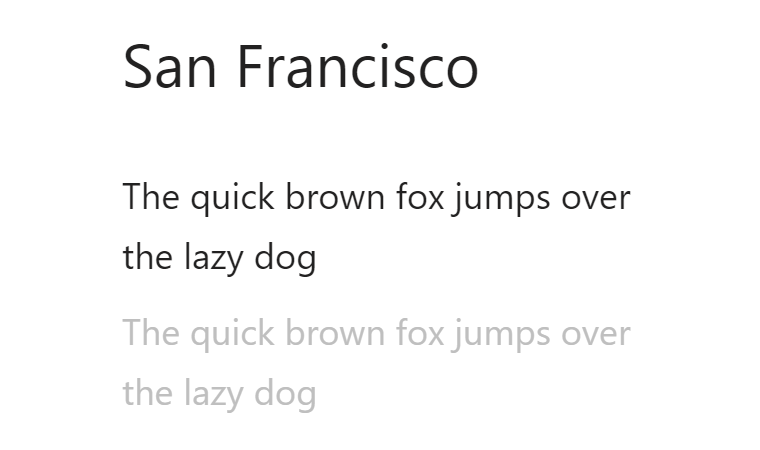
Learnings
This project was meant to serve as an application for the design theories and principles I had studied, and it proved very fruitful as such. I learned not only the number of decisions a designer has to take while working on a product, but also the intricate reasoning behind every decision.
It was my first time going through the Apple Human Interface Guidelines, and there was a newfound respect for the UX Decisions taken at Apple. I also learned how far good designers go to make sure an app looks consistent over the various operating systems.
The project also introduced me to the hidden UX in hamburger navigations and why Apple could afford tab-bars, while in Android, it could prove to be a bad decision. I also realised the importance of minimizing the steps for a user to complete a task.
All in all, it proved to be a good project, in terms of learning and applying the learnings.
Thank you!
Back to PortfolioLet's Talk!